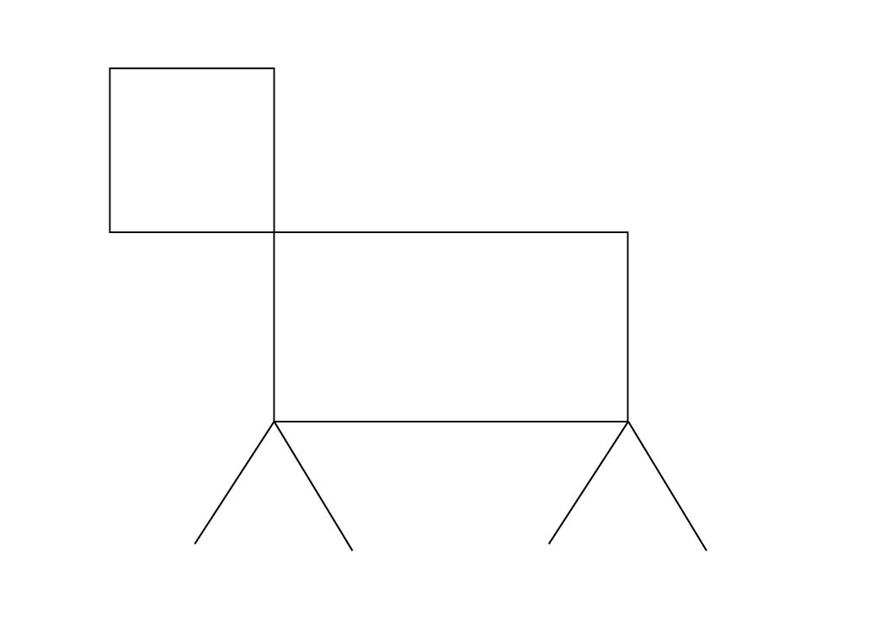
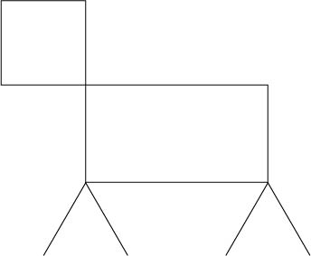

Instructions
The Orignal File

- Open Illustrator
- Select the rectangle tool
- Using the rectangle tool, make a 1.3in x 1.3in box, with the default stroke and fill colors.
- Make another box using the rectangle tool, with 2.8in x 1.5in dimensions.
- Move the boxes so that the bottom right corner of the smaller one connects to the top left of the bigger one.
- 6. Select the “Line Segment Tool”
- Create two horizant line segments that are 1.3in long.
- In the angle dropdown menu, change the degree of one line to 240* and the other to 120*.
- Move the two lines together so that their ends touch and the lines resemble and upside down v.
- Select both of the lines, and moves them so that the point of that upside down v falls on the bottom left corner of the bigger rectangle box.
- Copy and paste the two lines, and move the new set to the bottom right corner of the bigger ractangle.
- Select all of the created objects and group them together.
- Select the current artboard and change it to a 7in. x 5in. and move the object group so it falls in the center of the page.
- Export as a jpg and send to iyoung@gmu.edu.
What They Made
